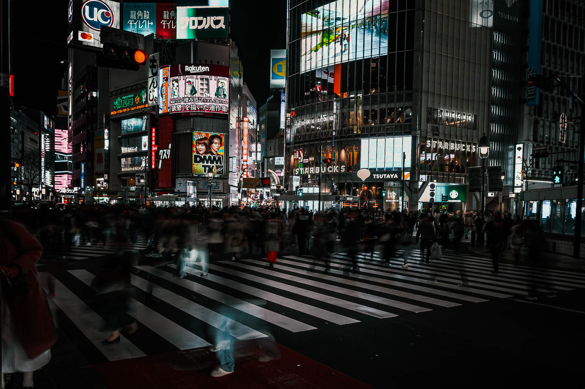
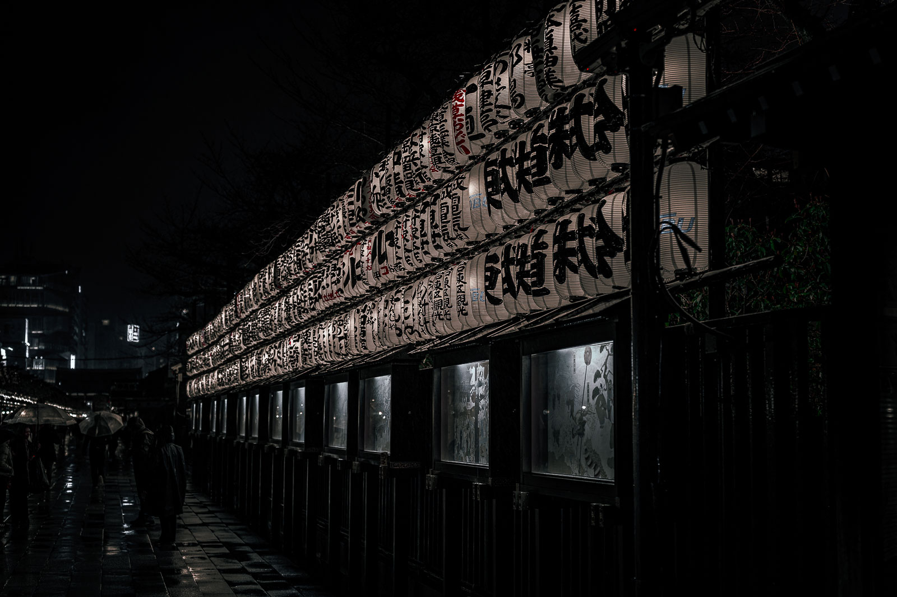
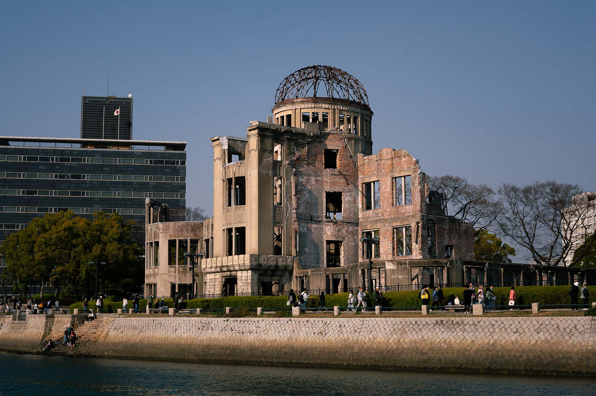
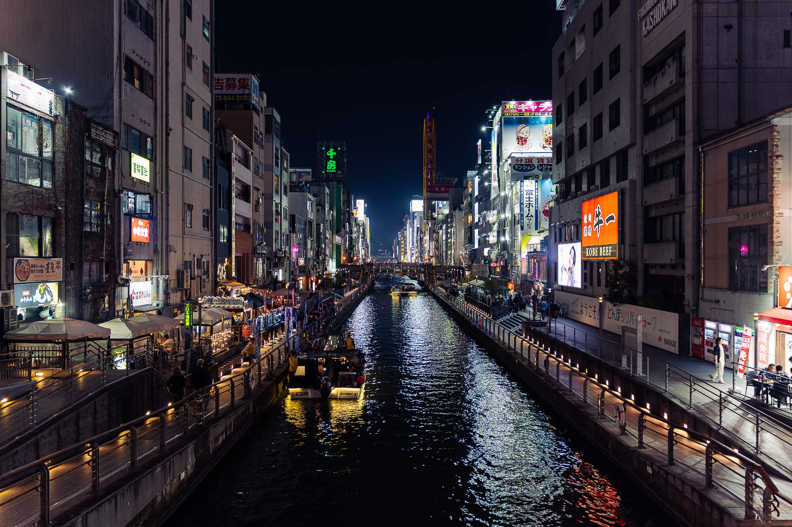
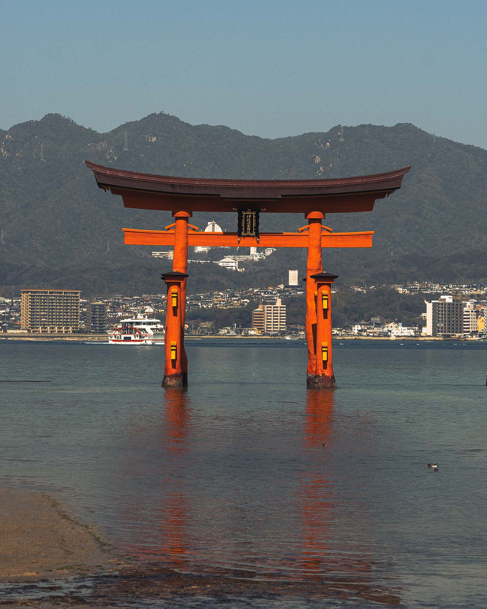
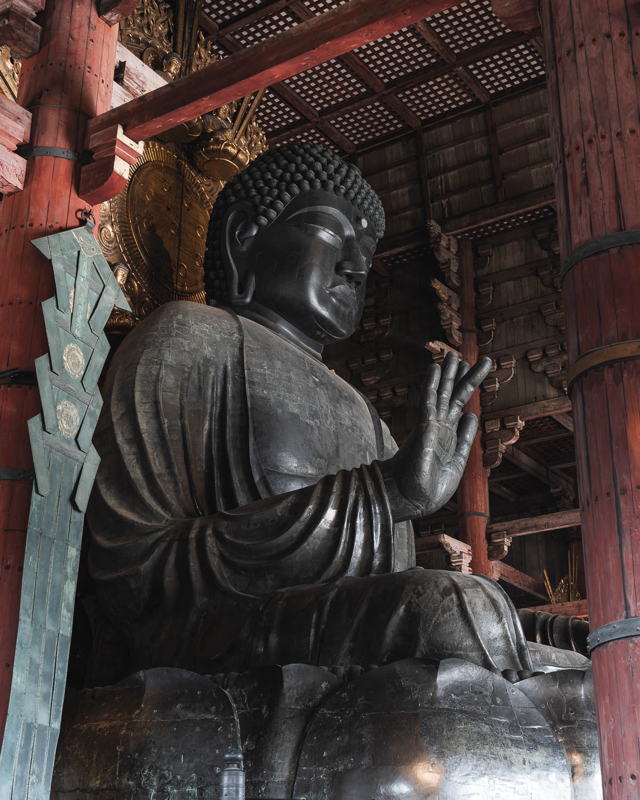

I travelled from 14th to 28th March, which I found to be a sweet spot for visiting Japan. You catch the very start of cherry blossom season without paying the premium that comes with travelling during peak bloom. The weather during this period was also more settled than I expected. There were rainy days, but dry days comfortably outnumbered them.
Travel Notes
Before You Fly
There are no visa requirements for British citizens, though if you hold a different passport it is worth checking the Japanese immigration website for the most up to date information before booking.
I flew from London Heathrow with British Airways. At the time I travelled, BA and Japan Airlines were the only two carriers offering direct flights to Tokyo Haneda. It is a long flight at around 13.5 hours, but the service and entertainment on board were both excellent. I flew out on the 9:05am, arriving in Tokyo the following morning around 7:30am. In hindsight, the midday service would have been the better choice as the jet lag hit hard when trying to push through that first full day. Flights were approximately £1,350 return, including two 23kg checked bags. It is worth noting that Japan has grown significantly in popularity since my trip, and direct flights now tend to come in upwards of £1,500 depending on the time of year.
On the luggage front, I would recommend packing into a large carry on rather than a full checked bag size if you can manage it. Getting around on the Shinkansen and subway systems with oversized luggage is genuinely tricky. Bullet trains require you to reserve a dedicated luggage space, typically at the rear of each carriage, so travelling lighter just makes the whole experience smoother.
Before you land, I would also recommend installing a travel eSIM that connects and activates automatically when you arrive. I use Airalo for all my trips and have found it reliable and straightforward to set up. I opted for 20GB over 30 days, which was more than enough, particularly given how accessible WiFi is across Japan's main cities. The 10GB option sits at around £14 as of mid 2026.
Travel Notes
On The Ground Essentials
For getting around, the Suica app is your best starting point. It is worth noting the app is in Japanese and at the time I travelled there was no language toggle, but there are plenty of YouTube walkthroughs that guide you through the setup clearly. I would recommend this over the Apple Pay Suica card, as the app issues you a card number which you can link directly when booking Shinkansen tickets, making it much easier to move through the gates without juggling a separate ticket. Once your card is created, you can add it to your Apple Wallet and tap through without even opening the app. Topping it up via Apple Pay takes seconds, and your balance is always visible at a glance.
For Shinkansen tickets, download the SmartEx app, where you can view and purchase journeys in advance. Depending on when you are travelling, booking before you arrive in Japan is advisable. My bullet train tickets across the full itinerary came to approximately £270, covering Tokyo to Kyoto, Kyoto to Hiroshima, Hiroshima to Osaka, and Osaka back to Tokyo. If you book a reserved seat, a confirmation slip with your carriage and seat number prints at the gate as you pass through, which is a handy reference to have on you.
One thing worth knowing before your first Shinkansen, give yourself more time at the station than feels necessary. I'd say an hour before departure. Grab food from a station vendor on the way, and stand at the platform ready to board when your train pulls in. The doors are open for a matter of minutes and the network runs to the second. It will not wait for you.


Itinerary
Tokyo · 4 days
Japan's capital is enormous, relentless and immediately unlike anything I had been to before. Flying in felt surprisingly industrialised, steel works, the port area, tiny kei cars going about their business below. Not quite the Japan I had imagined from behind a screen, but then the bags arrived at the carousel and a baggage handler caught each one and stood it upright, ready for collection. Simple, but it made an impression.
I based myself in Roppongi for four nights at the Remm Roppongi, £339 all in with breakfast included. Central enough that nothing felt far.
Check-in was not until 2pm and I arrived closer to 10am, so I dropped my bags in a station locker at Shibuya and spent the morning letting it properly sink in that I was actually here. The Shibuya Scramble Crossing on a Saturday is brilliant chaos. Hundreds of people queued at every kerb, and the moment the lights change they converge from every direction at once, tourists racing to the middle for the photo, locals weaving through with practised ease. What surprised me most was just how quickly the crowds rebuild between each light cycle, ready to do it all over again.
That evening I nearly let my Tokyo Tower booking lapse after making the biggest mistake of the trip so far and having a short nap. I woke up around 5pm, groggy and genuinely contemplating whether to just call it. I am glad I did not. Entry through Klook came to around £6, there was no limit on how long you could stay up top, and Tokyo lit up at night is something else. What caught me off guard was how surrounded by high-rise buildings you were at that height. Rather than feeling elevated above everything, you almost felt level with it all, like the city had simply swallowed you up.
Day two brought rain. Akihabara first, the home of anime, gacha and arcade culture across several floors, worth giving a couple of unhurried hours rather than a quick pass through. From there a thirty minute walk to Senso-ji, where rather than picking up keyrings or generic tourist souvenirs I bought a goshuin stamp book instead. Around £20 in total for the book and a monk inscribing it at the temple to mark my visit. It felt like a more personal and artistic way of recording my time in Japan. That afternoon I had a pre-booked Skytree slot through Klook at around £15. Visibility was less than five percent by the time I got to the top, which was a tough one to stomach. I went back to Senso-ji after dark when the crowds had cleared and it more than made up for it.
Day three was a full day trip to the Mount Fuji region on the Otsuki Limited Express from Shinjuku, around £36 return. The train splits at Otsuki with the front carriages diverting to the Fuji area, and it is worth reserving a seat. I learned this the hard way after missing my first train and facing a standing two and a half hours on the next one. The cloud sat around the summit all day, deflating in the moment, but statistically a clear view is far from guaranteed. From there I tracked down the famous telephoto street shot in Fujikawaguchiko, security wardens now managing both sides of the crossing, before spending the afternoon walking the shores of Lake Kawaguchiko as Fuji came progressively more into view. Back in Shinjuku that evening I wandered through Kabukicho, neon signs, barkers lining the pavements, live performances, the sheer density of people moving through the alleyways. I never felt unsafe, though I was approached by a bar tout as most visitors report. A firm no thanks and a swift walk in the other direction did the job. One of the most overwhelming and brilliant places I visited.
The final full day started at Shibuya Sky, the open air rooftop observation deck above the scramble. Sunset slots sell out well in advance so I settled for a daytime slot through Klook at around £25. Book thirty days ahead if you want any real choice of time. After lunch in the mall below I walked over to Meiji Jingu, collected more goshuin stamps and spent time appreciating how impeccably well kept the whole site was. That evening I went back to Shibuya for the scramble after dark, completely different energy to the daytime, flashing billboards, neon everywhere, the constant flow of people from every direction. From there I ended up spending the best part of two hours in Bic Camera working through every floor. Computers, cameras, lenses, kitchen appliances, bathroom fittings. It is a shame nothing exists on quite the same scale here.
Getting around on the subway was one of the genuine surprises of the trip cost wise. Single journeys rarely topped 200¥ and across four days of fairly heavy use I spent around £25 in total on local transport.


Tokyo Honest Take
Tokyo is expensive relative to the rest of Japan, but probably less so than its reputation suggests if you plan sensibly. Accommodation is the main cost, and at £339 all in with breakfast the Remm Roppongi represented solid value for where it put you. Food is where Japan genuinely catches people off guard in a good way. A convenience store lunch from 7-Eleven or Lawson costs next to nothing and is genuinely decent.
The activities list looks longer than it feels on the ground. Tokyo Tower, the Skytree, Shibuya Sky and the full Fuji day trip combined came to around £140, and none of it felt like poor value for what it delivered. The Fuji day trip is the one worth flagging. Weather makes or breaks it and there is no way of knowing what you will get on the day. I would still do it again.
Tokyo Approximate Spend: £595
Itinerary
Kyoto · 3 days
After the relentless pace of Tokyo, Kyoto hits differently. Where Tokyo feels like it is constantly moving, Kyoto makes you want to slow down. The traditional architecture, the lantern-lit shrines tucked between quiet streets, the sense that something genuinely old is still being lived in rather than just preserved for tourists. It quickly became my favourite stop of the entire trip.
I stayed at the Hotel Gran Ms Kyoto for three nights at £195 in total. A small tourist tax was added on checkout, though it is worth flagging that Kyoto significantly increased its accommodation tax from March 2026 in response to overtourism pressures, with mid-range hotels now attracting ¥1,000 per person per night rather than the ¥500 I paid. It is commutable as a day trip from Osaka on the local train, which keeps costs down, but Kyoto genuinely rewards staying. The early mornings and the evenings after the day visitors have left are a different city entirely, and you lose both if you are heading back each night.
On the same evening I arrived and checked in I headed straight out for a wander and made my way to Yasaka Shrine. The lanterns were glowing under the night sky and the whole area had a quiet magic to it that set the tone for everything that followed. Day one I took the bus out to Kinkaku-ji, the Golden Pavilion, one of the most photographed buildings in Japan and genuinely worth every bit of the reputation. Entry was around 500¥ and you follow a one-way path around the grounds at your own pace. From there I headed to Nijo Castle, around 300¥ to get in, a different kind of impressive to the temples and shrines but well worth the visit.
Day two started at Fushimi Inari Taisha, reached by subway, where thousands of vermillion torii gates wind up the hillside in an almost unbroken tunnel of red and orange. I spent a few hours here and would strongly recommend continuing past the halfway point where most visitors turn back. The crowds thin noticeably and the views over Kyoto city from the top are spectacular. Bring your goshuin book as there are several places to collect stamps as you make your way around the site. That evening I headed into the Gion district as the light faded. Gion is best experienced at dusk when the lanterns come on and the streets take on a completely different character. If you are lucky you may spot a geisha or maiko going about their evening. If you do, keep a respectful distance and put the camera away. These are people living their lives, not a tourist attraction.
Day three was a full day on foot through the streets and alleyways of the Gion district. I visited Kodaiji Temple and walked through its bamboo forest, which I would take over Arashiyama every time. It is cheaper, better located and considerably less crowded. From there I made my way to Kiyomizu-dera, one of Kyoto's most celebrated temples, perched on a hillside with sweeping views across the city. More goshuin stamps, more time just wandering the grounds and taking it all in.


Kyoto Honest Take
Kyoto was my favourite stop of the entire trip and it is not particularly close. The depth of culture here is unlike anywhere else I visited. Seeing five or six maiko going about their evening in full dress was one of those moments that stays with you. What struck me most was how immaculate they were, the detail in the dress, the composure, the complete indifference to the tourists staring. A genuine window into something that still exists rather than something performed for visitors.
That said, Kyoto is extraordinarily busy. The idea of a quiet temple or a clean shot without someone walking through it is largely a fantasy. I was out before 6am on one morning chasing the light and the crowds were already gathering. It is still worth every second, just go in with realistic expectations rather than the postcard version in your head.
Cost wise Kyoto is very manageable. Accommodation at £195 for three nights was reasonable for the location, the temple and shrine entry fees are modest across the board, and food is as affordable as anywhere else in Japan if you are eating at the typical Japanese restaurants on offer.
Kyoto Approximate Spend: £380
Itinerary
Hiroshima · 2 days
Hiroshima is unlike anywhere else on the itinerary. It carries a weight that you feel before you have even left the station, and that feeling stays with you throughout the visit in a way that is difficult to articulate until you are standing in it.
I stayed at the Hiroshima Washington Hotel for two nights at £151 in total, breakfast included. The hotel is walkable from the station, or the street car will get you there and accepts Suica.
After checking in I headed straight to the Peace Memorial Park, the obvious and necessary first stop in Hiroshima. I wandered through the gardens, took in the A-Bomb Dome and just stood still for a while. There is not much more to say about it than that. Some places ask you to slow down and this is one of them. On the way through I stopped at the Miyajima boat pier to check return times for the following day. Booking was not required but I made a note to get there early to get ahead of the crowds on the island. While in the park I picked up a ticket through Klook for the Peace Memorial Museum at around £2.20, which felt almost too cheap given what it contains. It is busy inside but the information and history on display is extensive and genuinely moving. Do not skip it.
Day two was Miyajima. I headed to the pier after breakfast and picked up a return ferry ticket for around 4,500¥. You will need to select a return time when you book so think about what you want to do on the island before committing. I wanted to visit Itsukushima Shrine, collect stamps at the temples and climb Mount Misen. The crossing takes between thirty and sixty minutes each way. Itsukushima Shrine was already busy when I arrived, entry at around 200¥, and the famous floating torii gate was visible from the grounds though worth noting it is only partially or fully submerged depending on the tide so do not bank on a specific shot. I opted to hike Mount Misen rather than take the ropeway, around an hour and a quarter of mostly stairs. Locals passing in the other direction greeting you with a friendly konichiwa made it a genuinely enjoyable climb. One practical note: there are snakes on the island and signposts throughout reference this. I did not see any but they are venomous so keep an eye out, particularly if travelling with younger people. From the summit I headed to Daisho-in Temple to see the Buddhas in their red knitted hats and the lantern filled cave before making my way back to the ferry. The wild deer roaming the island are a highlight but they are bold and opportunistic. Do not feed them and keep your bag closed or they will do it themselves.
Back on the mainland I headed to Hiroshima Orizuru Tower for sunset, looking out over Peace Park as the evening settled across the city. After the weight of the previous day and the exertion of the hike, it was the right way to close out Hiroshima. Peaceful, unhurried, and worth the roughly £11 entry.


Hiroshima Honest Take
Hiroshima is not a difficult place to recommend because it does not really feel like a recommendation in the usual sense. It is somewhere you should go. The history is sobering, the Peace Memorial Museum is genuinely important, and the contrast between the weight of what happened here and the quiet, rebuilt city around you is something that takes time to process. Miyajima is a brilliant full day alongside it, combining the shrine, the hike and the deer into something that feels completely different in tone but equally memorable.
Two nights felt about right. Enough time to do both properly without rushing either.
Hiroshima Approximate Spend: £280
Itinerary
Osaka · 3 days
I stayed at The OneFive Osaka Namba Kuromon for three nights at £263 in total, breakfast included. Namba is central and well placed for getting around, with Kuromon Market sitting almost directly across the street from the hotel.
On the first evening I headed straight into the market after dropping my bags. It is unlike anything else on the itinerary. Vendors line the stalls with fresh local fish, varying grades of Kobe beef and live seafood you can buy and have prepared at the counter on the spot. What stopped me in my tracks was watching a chef break down what was the biggest piece of tuna I have ever seen, carving it methodically and picking out the bones with tweezers. It was closer to watching an artist work than buying lunch. Worth noting that Kuromon has a different energy to most of Japan. Vendors actively try to pull you in, which sits at odds with the quiet, considered etiquette you encounter almost everywhere else in the country. Once the sun started to drop I headed over to Dotonbori, walking along the canal edge with river taxis passing by, the smell of food drifting out of every restaurant and the Glico Man billboard lighting up the strip. Tourists posed for photos, locals went about their evening and the whole area hummed with a kind of cheerful chaos that is hard not to enjoy.
The second day I headed out to Nara on the limited express, around 700¥ each way, which for the distance felt almost laughably cheap compared to anything equivalent in the UK. Nara is famous for its wild deer and the reputation is well earned. They are bold, will go for your clothes if they think you are holding out on them, and apparently bow before being fed which is as amusing as it sounds. I walked the park grounds and visited several temples but the main draw was Todai-ji, home to one of Japan's largest bronze Buddhas housed inside an enormous wooden temple hall. Entry was around 200¥ and worth every bit of it, though a clean shot inside with the crowds was close to impossible. The grounds carry a lot of history and are worth taking slowly. There is also a hole in one of the support pillars that is supposedly the same width as one of the Buddha's nostrils, and queuing to squeeze through it is an oddly popular activity. Genuinely quite funny to watch. I headed back into Osaka that evening for food and another wander through Dotonbori before calling it a night.
On the third day I took the train across to Kobe for the morning, primarily to see the port area and try the beef. The beef restaurants offered taster options alongside full sit down meals and as a solo traveller I went for the taster at around £11. The flavour was excellent even at a mid-range grade, though the portion left me wanting considerably more. More of an introduction to what Kobe beef is than a meal. I grabbed lunch near the port before heading back to Osaka and over to Tsutenkaku, a tower in the Shinsekai district surrounded by bars, restaurants and a generally lively street level scene. Entry was around £7 and the views over the Osaka loop road and surrounding area gave a different perspective on the city that was worth the climb.
My final day was supposed to be Osaka Castle but by this point the itinerary had caught up with me. Two weeks of early starts, long days and a lot of walking will do that. I gave myself permission to do very little, wandered the local streets, had a look around Don Quijote and visited a couple of shrines for stamps and photos. Sometimes the right call is knowing when to stop.


Osaka Honest Take
Osaka was the one stop I came away feeling slightly underwhelmed by in all honesty. It felt heavily food orientated and tourist dense without quite having the depth of culture that made Tokyo, Kyoto and Hiroshima so memorable. There were decent photo opportunities and the day trips to Nara and Kobe were both worth doing, but in hindsight a day trip into Osaka from Kyoto might have been enough. Three nights was probably one too many. Though I will say some of that is likely on me. By the final few days I was running low on energy and a fresher version of myself might have got more out of it. Worth visiting, just perhaps not worth anchoring your itinerary around.
Osaka Approximate Spend: £445
Itinerary
Tokyo · 1 day
The final Shinkansen back to Tokyo felt different to the others. No next stop to plan for, no itinerary to think through. Just the countryside passing by and two weeks of memories to sit with.
I stayed at the Hotel Oriental Express Tokyo Kamata for one night at £68, chosen specifically for its proximity to Haneda airport via the Keikyu line. In hindsight I could have made better use of the coin lockers rather than checking in first, but with it only being thirty to forty minutes out it was not the end of the world. With one final afternoon in Tokyo I headed back to Shibuya, an area I had genuinely loved, to wander the shops and soak up the atmosphere one last time. The cherry blossoms were noticeably further along than at the start of the trip, closer to full bloom now, which made for a nice contrast to the bare branches I had arrived to two weeks earlier.
I was back at the hotel by 10pm with a 6am airport arrival needed for a 9:30am flight. Around 11pm a British Airways email landed notifying me my flight had been cancelled. I was automatically rebooked onto a twenty hour itinerary connecting through Helsinki, which given I had paid a premium for a direct service was not exactly welcome news at that hour. After some frantic searching I managed to get rebooked onto a BA service departing thirty minutes earlier, only to realise as I was doing it that I had taken one of the last two seats available. Sleep was not happening after that.
Up three hours later, bags packed, subway to Haneda. On arrival both the original and new flight were showing as cancelled on the departures board, which in a foreign country with a language barrier is about as stressful as it sounds. It turned out to be a system error and the flight was running, but it was not until we had taxied and lifted off that I actually believed I was going home that day. A shame to end what had been an exceptional trip on that note. I have included it here because it is part of the honest account, and also because it is the reason I would always recommend building in an overnight Tokyo stay before flying rather than trying to connect directly from another city. Things go wrong and having that buffer matters.



A Final Word On Japan
Japan is one of the best trips I have ever taken. The culture, the scale, the food, the people, the sheer difference of it from anywhere else I have been. It was busy, and has only grown in popularity since my visit, so the postcard images you see online require either an early alarm or a healthy dose of patience and luck. But the experience more than absorbs all of that.
I will go back. Next time I would head north, spending time in the Tohoku region and making it across to Hokkaido. There is clearly more of Japan to explore than one trip can cover and that feels like exactly the right problem to have.
Final Tokyo Night Spend: £108
Travel Notes
Trip Cost Summary
All figures below are based on my trip in March 2024. At the time, the GBP to JPY exchange rate was approximately 190 yen to the pound. Costs have changed since, accommodation and flights in particular have risen, and the exchange rate will vary depending on when you travel. Treat these as a realistic ballpark rather than a fixed budget.
Flights
Direct flights now tend to come in upwards of £1,500 depending on the time of year.
Shinkansen
eSIM
First time purchase? Code ALEX05856 takes £2.50 off.
Tokyo — 4 Nights
Kyoto — 3 Nights
Hiroshima — 2 Nights
Osaka — 3 Nights
Final Tokyo Night
Travel insurance is not included as this varies significantly depending on your provider, level of cover and personal circumstances. Do not skip it.